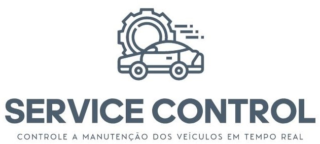
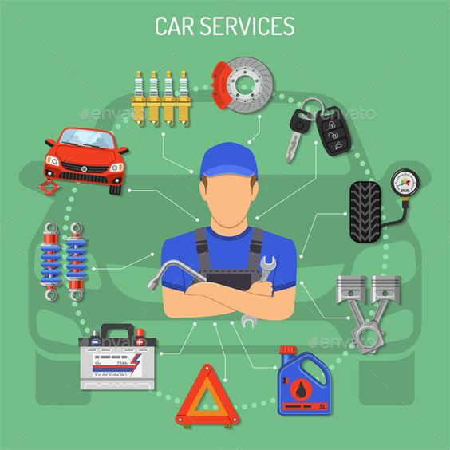
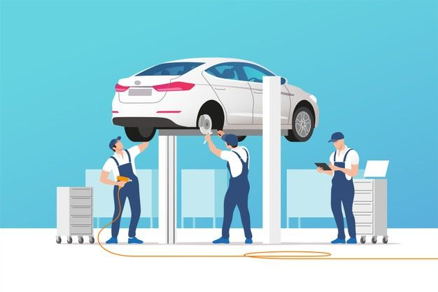
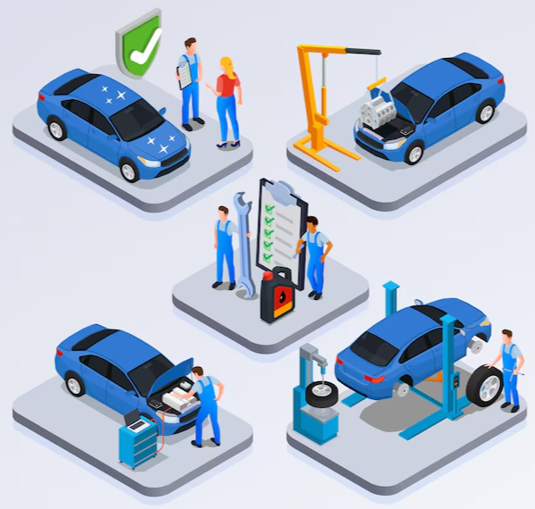

O MODO DE OTIMIZAR E FACILITAR A MANUTENÇÃO DO SEU VEÍCULO

APLICATIVO OTIMIZADO
- Agendamento de serviços de manutenção e reparação de veículos.
- Acompanhamento em tempo real do status da manutenção do veículo.
- Notificações e lembretes automáticos sobre prazos de entrega e serviços concluídos.
- Histórico de manutenção e registros de serviços realizados no veículo.
- Orçamentos online e estimativas de custos para os serviços solicitados.
- Recomendações personalizadas com base no histórico de manutenção do veículo.
- Chat em tempo real com especialistas para esclarecer dúvidas dos clientes.
- Programa de fidelidade e recompensas para clientes frequentes.
- Avaliações e comentários dos clientes sobre os serviços prestados.

PROBLEMA
- Atrasos na entrega e no cumprimento dos prazos acordados com os clientes.
- Perda de confiança dos clientes na oficina e possível migração para a concorrência.
- Prejuízo financeiro devido à necessidade de retrabalho ou reparos adicionais causados pelo esquecimento.
- Desorganização na gestão dos veículos em manutenção, dificultando o controle e acompanhamento adequados.
- Sobrecarga de trabalho nos colaboradores da oficina, uma vez que os veículos esquecidos podem ocupar espaço e recursos desnecessários.
- Possibilidade de danos e deterioração dos veículos devido à falta de cuidado e acompanhamento.
- Aumento das reclamações e insatisfação dos clientes, afetando a reputação da oficina.
- Perda de oportunidades de venda de serviços adicionais durante a manutenção dos veículos.
- Riscos legais e responsabilização da oficina em casos de danos, roubos ou extravios de veículos esquecidos.
NICHO DE MERCADO
- Excelência no atendimento ao cliente.
- Transparência.
- Qualidade e competência técnica.
- Serviços personalizados.
- Valor agregado.

PROPOSTA DE VALOR
- Buscamos oferecer aos nossos clientes uma experiência de qualidade e valor agregado. Entendemos que investir em manutenção e reparação automotiva pode ser uma preocupação.
- Compreendemos que os custos de manutenção podem variar dependendo do serviço necessário. Por isso, estamos empenhados em fornecer orçamentos transparentes e detalhados, para que os clientes possam tomar decisões informadas. Além disso, oferecemos rastreamento dos veiculos, status da manutenção, garantindo agilidade da informação, transparência e comodidade em tempo real.
- Acreditamos que o investimento em serviços de qualidade resulta em economia a longo prazo, evitando reparos futuros e prolongando a vida útil dos veículos. Priorizamos a satisfação do cliente, trabalhando com eficiência, transparência e atendimento personalizado.
Agradecemos pela Preferência :)